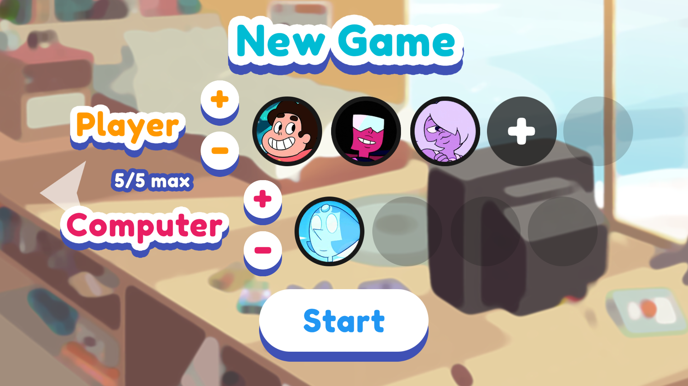

CRYSTAL RAIN
Crystal rain is a school project made in 3 weeks in January 2020 with Rendy Latbi. The goal was to create a game with computer vision input. We decided to make a game where you have to control 4 miners with 4 pawns on a board. The miners have to gather minerals of their own color and bring them back to their house in order to bank the points. There's also minecarts randomly crossing the place that must be avoided or the game will end.
I was in charge of developing the pawn detection algorithm and the main gameplay, while Rendy took care of the art, UI, and balance.
